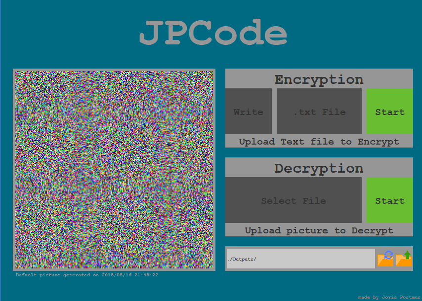

What is it?
JPCode is a new way to encrypt long or short pieces of text in a visual and colorful way. All you have to do is upload or write a piece of text and the program will spit out an image containging that information in JPCode format. If you want to decrypt a JPCode image all you have to do is upload it and the program will spit out the Decrypted message. Now you can send text in the form of images which look like distorted images to people that don't have the program.

How does it work?
You enter a piece of text, the encryptor looks at it letter for letter and turns each letter into a numerical value. It takes 3 numerical values and then turns them into one Color (A color takes 3 values: red, green and blue) it then puts all the different colors on a grid of pixels. Once the encryption is done and there are still empty spaces left the Encryptor will put random colors on the grid to fill up the whole image. Each JPCode image contains 200 by 200 pixels, that is 400,000 total pixels, that is 1,200,000 letters encrypted into one tiny picture.